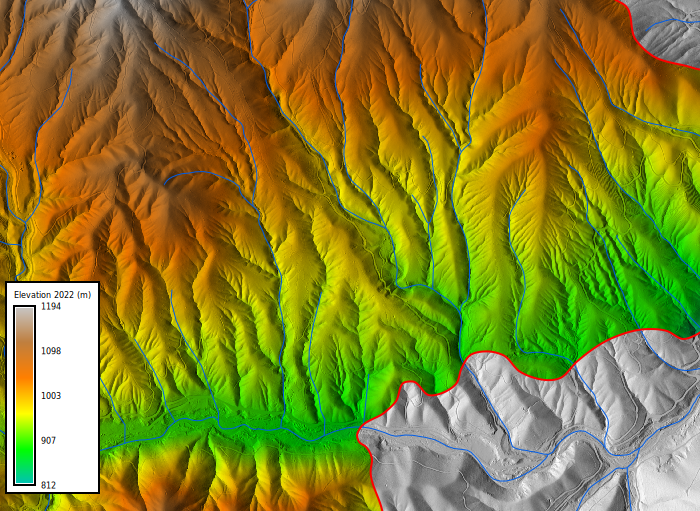
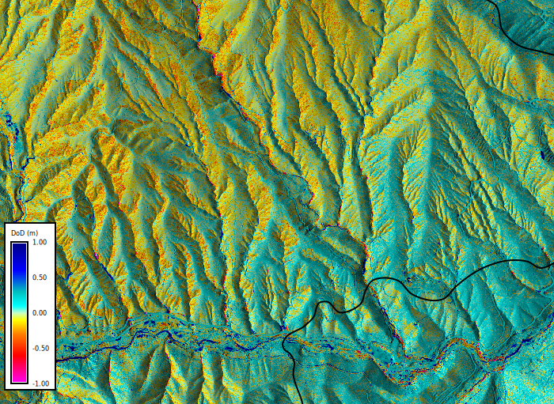
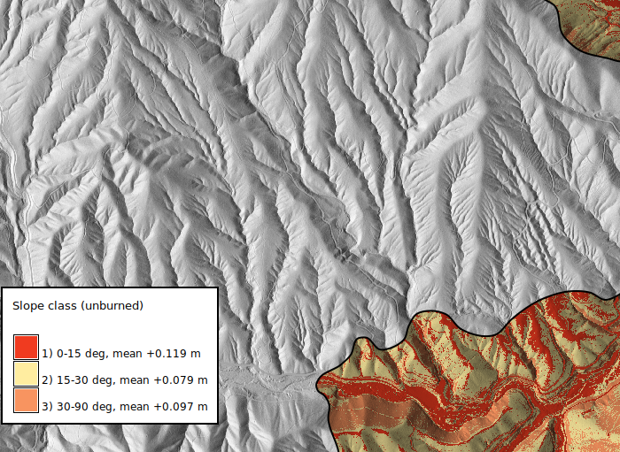

import io
import os
import subprocess
from workshop_utils import RAW, Tools, gj, gs, stable_stats, start
tools, session = start("01")Part 01 ready in mapset workshopWe start with two lidar DTMs of the focal region. One was flown in September 2013. The other was flown in fall 2022, six to twelve weeks after the McKinney Fire and the August 2 storm. By the end of this part both epochs are in GRASS, registered in a space-time raster dataset, and differenced into a first DEM of Difference (DoD). The rest of the workshop is about how far to trust it.
Part 01 ready in mapset workshopBoth files report the same coordinate reference system (CRS).
dtm_2013_native: NAD83 / UTM zone 10N
dtm_2022: NAD83 / UTM zone 10NThe collection metadata tells a different story.
| Epoch | Horizontal datum | Vertical datum |
|---|---|---|
| 2013, USFS | NAD83 | NAVD88, GEOID12A |
| 2022, USGS 3DEP | NAD83(2011) | NAVD88, GEOID18 |
The file headers do not record the NAD83 realization. If we tell PROJ the 2013 file is the original NAD83 and ask for NAD83(2011), it applies the NADCON5 grid shift. Without the grid it silently applies none.
point = "522000 4625000 0\n"
for network in ("OFF", "ON"):
out = subprocess.run(
["cs2cs", "-d", "3", "EPSG:26910", "EPSG:6339"],
input=point,
capture_output=True,
text=True,
env={**os.environ, "PROJ_NETWORK": network},
).stdout.split()
print(f"PROJ_NETWORK={network}: 522000 4625000 -> {out[0]} {out[1]}")PROJ_NETWORK=OFF: 522000 4625000 -> 522000.000 4625000.000
PROJ_NETWORK=ON: 522000 4625000 -> 522000.202 4625000.552With the grid, that point moves about 0.6 m. The geoid models differ too. Here GEOID18 sits 2 to 3 cm below GEOID12A (compared with GEOID12B, which NGS documents as identical to GEOID12A outside Puerto Rico), so the same ground reads 2 to 3 cm higher in 2022 before anything has changed.
We do not resolve either offset by relabeling files. The project uses EPSG:26910, the CRS both files declare, so nothing is reprojected on import and the result does not depend on whether PROJ can reach its grids. Part 02 measures the remaining horizontal and vertical offset on stable ground instead.
The computational region is the focal area at 1 m. r.import clips each file to the region. Both files already use the project CRS, so nothing is reprojected, and each epoch keeps the grid it was delivered on.
for name, path in epochs.items():
tools.r_import(
input=str(path),
output=name,
extent="region",
overwrite=True,
)
region = gs.region()
for name in epochs:
info = gs.raster_info(name)
dx = (info["west"] - region["w"] + 0.5) % region["ewres"] - 0.5
dy = (info["north"] - region["n"] + 0.5) % region["nsres"] - 0.5
print(f"{name}: offset from the region grid {dx:+.3f} m east, {dy:+.3f} m north")dtm_2013_native: offset from the region grid +0.290 m east, -0.170 m north
dtm_2022: offset from the region grid -0.000 m east, +0.000 m northThe 2022 grid sits on the region grid. The 2013 grid is offset by about a third of a cell. Any tool that reads the 2013 DTM on this region takes the nearest 2013 cell, which moves the whole surface by that offset. Resample it onto the region with bilinear interpolation and use that as the working 2013 DTM.
tools.v_to_rast(
input="mckinney_perimeter@PERMANENT",
output="burned_area",
use="val",
value=1,
overwrite=True,
)
tools.r_mapcalc(expression="burned = if(isnull(burned_area), 0, 1)", overwrite=True)
tools.r_category(
map="burned", separator=":", rules=io.StringIO("0:unburned\n1:burned\n")
)
# Color the burned ground by elevation and leave the unburned ground gray.
tools.r_colors(map="dtm_2022", color="elevation")
tools.r_mapcalc(expression="dtm_2022_burned = if(burned == 1, dtm_2022, null())")
tools.r_colors(map="dtm_2022_burned", raster="dtm_2022")
fire = gj.Map(width=700)
fire.d_rast(map="dtm_2022_relief")
fire.d_shade(shade="dtm_2022_relief", color="dtm_2022_burned")
fire.d_vect(map="nhd_flowlines@PERMANENT", color="0:92:230", width=1)
fire.d_vect(map="mckinney_perimeter@PERMANENT", fill_color="none", color="red", width=2)
fire.d_legend(
raster="dtm_2022", title="Elevation 2022 (m)", at=(5, 40, 2, 5), flags="b"
)
fire.show()
The red line is the MTBS fire perimeter. Ground inside it, which burned, is colored by elevation. Ground outside it is gray. The blue lines are the mapped streams from the USGS National Hydrography Dataset (NHD). The fire control line follows Humbug Creek, so part of this region did not burn. That unburned ground is what we use to measure error.
With two epochs a time series sounds like overkill. It stops being overkill the first time you add a third collection, and it keeps the acquisition dates attached to the data. Each epoch is registered with its collection window as a time interval.
# GRASS intervals end exclusively, so each end date is the day after the last flight.
with open("epochs.txt", "w") as f:
f.write("dtm_2013|2013-09-04|2013-09-08\n")
f.write("dtm_2022|2022-09-14|2022-10-29\n")
tools.t_create(
output="dtm",
type="strds",
temporaltype="absolute",
title="Humbug Creek lidar DTMs",
description="Bare-earth DTMs, 1 m, focal region",
overwrite=True,
)
tools.t_register(input="dtm", type="raster", file="epochs.txt", overwrite=True)
print(tools.t_rast_list(input="dtm", columns="name,start_time,end_time").text)name|start_time|end_time
dtm_2013|2013-09-04 00:00:00|2013-09-08 00:00:00
dtm_2022|2022-09-14 00:00:00|2022-10-29 00:00:00Subtract the earlier epoch from the later one with r.dem.dod, pulling the map names from the dataset in time order. Negative values are surface lowering (erosion), positive values are surface raising (deposition). range=1 fixes the color scale at plus or minus 1 m so later DoDs compare with this one.
dod_naive = dtm_2022 - dtm_2013
r.mapcalc reads every input on the region grid and takes the nearest cell. Give it the native 2013 grid and compare with the resampled DoD. r.dem.dod run on the same native grid resamples it and prints a warning with the offset.
# Keep the warning text so it shows in the notebook.
result = Tools(capture_stderr=True, consistent_return_value=True).r_dem_dod(
dem="dtm_2022", reference="dtm_2013_native", output="dod_resampled", range=1
)
print(result.stderr.strip())
tools.r_mapcalc(expression="dod_nearest = dtm_2022 - dtm_2013_native")
tools.r_mapcalc(expression="nearest_error = dod_nearest - dod_naive")
error = tools.r_univar(map="nearest_error", format="json")
print(
f"Nearest-cell DoD minus resampled DoD: min {error['min']:+.2f} m, "
f"max {error['max']:+.2f} m, std {error['stddev']:.3f} m"
)WARNING: Raster map <dtm_2013_native> is not aligned with the computational
region (resolution 1 x 1, origin offset 0.290, -0.170). Resampling
with bilinear interpolation.
Nearest-cell DoD minus resampled DoD: min -2.18 m, max +2.25 m, std 0.108 mTwo patterns stand out. Humbug Creek and the side channels are blue, which is deposition after the storm. On the hillslopes the color shifts with the direction a slope faces, which is what a horizontal offset between the epochs would produce. Part 02 measures how much of that offset is real.
If the DoD were all real change, unburned ground would average close to zero. Compare the two.
unburned: mean +0.094 m, median +0.098 m, std 0.167 m, cells 952308
burned: mean -0.017 m, median -0.013 m, std 0.160 m, cells 5504246Write down the unburned mean and standard deviation. A nonzero mean on ground that did not burn is systematic error, which includes the datum offsets above. The spread is noise. Part 02 removes the first and part 03 turns the second into a level of detection.
Error on steep slopes is often larger because a small horizontal offset turns into a large vertical one. Split the unburned ground into slope classes and compare the DoD spread two ways: the standard deviation, and the NMAD (normalized median absolute deviation), a spread estimate that a few large outliers cannot pull. Change breaks and see how the numbers move.
tools.r_slope_aspect(elevation="dtm_2013", slope="slope_2013", overwrite=True)
# Slope class breaks in degrees. Try other breaks, then rerun this cell and the next.
breaks = [0, 15, 30, 90]
labels = {
n: f"{lo}-{hi} deg" for n, (lo, hi) in enumerate(zip(breaks, breaks[1:]), start=1)
}
# Nested if() gives each unburned cell the number of its slope class.
classes = "null()"
for n in sorted(labels, reverse=True):
classes = f"if(slope_2013 < {breaks[n]}, {n}, {classes})"
tools.r_mapcalc(
expression=f"slope_class = if(burned == 0, {classes}, null())", overwrite=True
)
spread = {
zone["zone"]: zone
for zone in tools.r_univar(map="dod_naive", zones="slope_class", format="json")
}
print(f"{'class':>10}{'mean':>9}{'std':>8}{'NMAD':>8}")
for n, label in labels.items():
tools.r_mapcalc(expression=f"slope_bin = if(slope_class == {n}, 1, null())")
nmad = stable_stats(tools, "dod_naive", "slope_bin")["nmad"]
print(
f"{label:>10}{spread[n]['mean']:>+9.3f}{spread[n]['stddev']:>8.3f}{nmad:>8.3f}"
) class mean std NMAD
0-15 deg +0.119 0.205 0.076
15-30 deg +0.079 0.145 0.082
30-90 deg +0.097 0.157 0.092Map the slope classes on the unburned ground, colored from light to dark by their mean offset, with the mean in the legend. If the offset were a single vertical shift, every class would have the same mean. Rerun this cell after changing the class breaks.
means = {n: spread[n]["mean"] for n in labels}
tools.r_category(
map="slope_class",
separator=":",
rules=io.StringIO(
"".join(f"{n}:{labels[n]}, mean {means[n]:+.3f} m\n" for n in labels)
),
)
# Light to dark in order of mean offset, for any number of classes.
light, dark = (255, 237, 160), (240, 59, 32)
order = sorted(means, key=means.get)
def shade(rank):
t = rank / max(len(order) - 1, 1)
return ":".join(str(round(a + (b - a) * t)) for a, b in zip(light, dark))
color_of = {n: shade(rank) for rank, n in enumerate(order)}
# r.colors needs the rules in ascending category order.
tools.r_colors(
map="slope_class",
rules=io.StringIO("".join(f"{n} {color_of[n]}\n" for n in sorted(means))),
)
offsets = gj.Map(width=700)
offsets.d_rast(map="dtm_2013_relief")
offsets.d_shade(shade="dtm_2013_relief", color="slope_class")
offsets.d_vect(
map="mckinney_perimeter@PERMANENT", fill_color="none", color="black", width=2
)
offsets.d_legend(
raster="slope_class",
title="Slope class (unburned)",
at=(5, 5 + 8 * len(labels), 2, 5),
fontsize=12,
title_fontsize=13,
flags="b",
)
offsets.show()
With the default breaks the class means fall between +0.08 and +0.12 m with no steady trend. Most of the offset is a vertical shift shared by every class. The standard deviation does not grow with slope either, because a small share of large differences dominates it. The NMAD ignores those and does grow with slope, from about 7.6 cm below 15 degrees to about 9.2 cm above 30. Part 03 builds its level of detection on that trend. Rerun the nearest-cell DoD through these classes and the spread between them grows, because the grid offset acts like a horizontal shift. Part 02 separates the vertical offset from what horizontal offset remains.